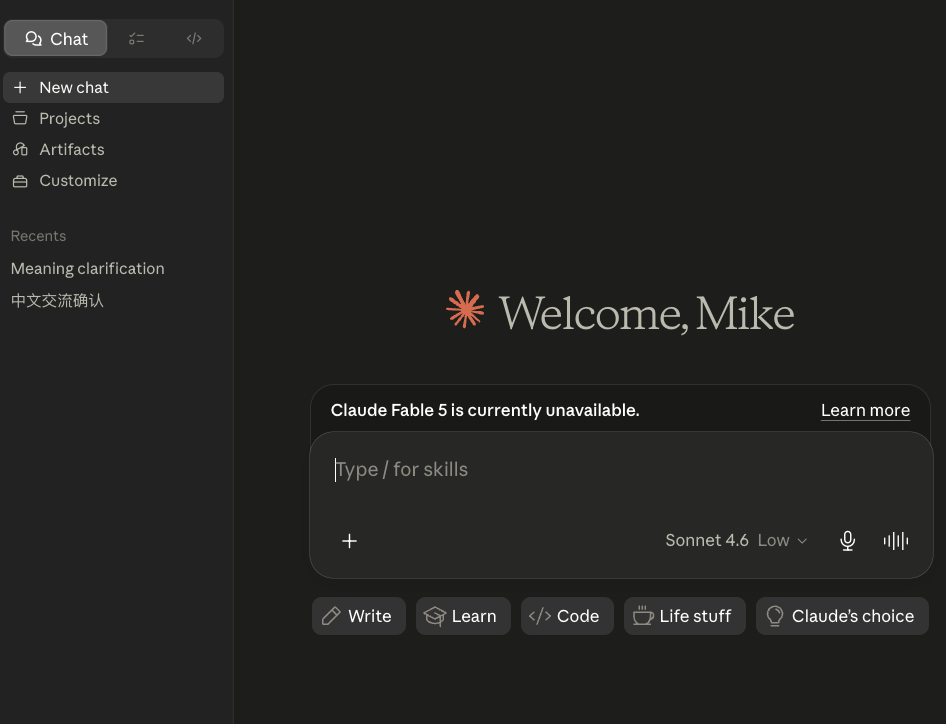
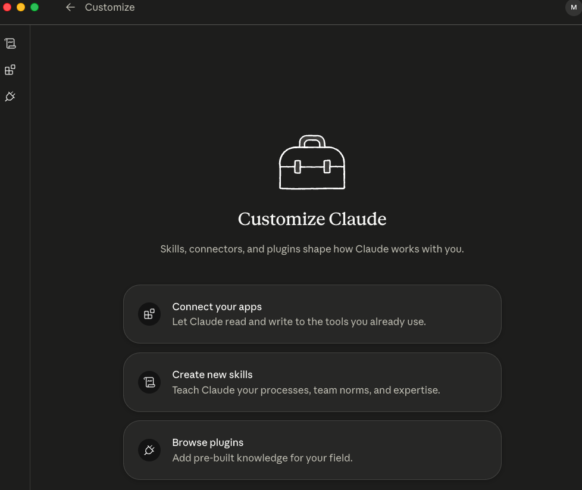
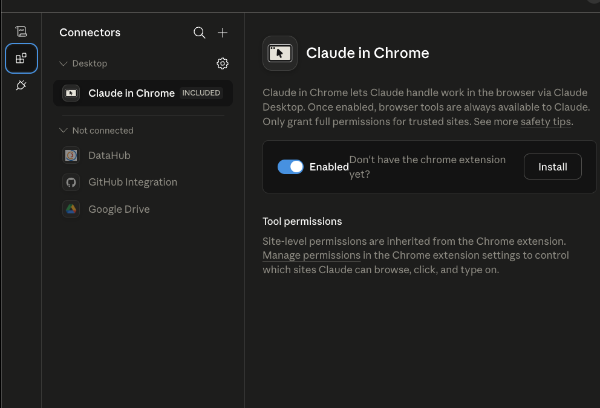
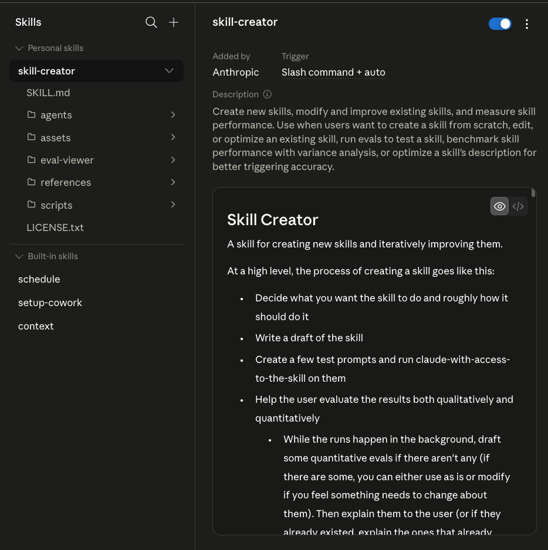

語言分兩層：回覆語言與介面語言
放進 CLAUDE.md
這一層決定 Claude 每次回你時用哪種語言。要長期穩定，就不要每次在 prompt 重講，而是直接寫成專案規則。
# Language - 永遠使用繁體中文回覆 - 工具名、套件名、指令保留原文 - 不要改成簡體中文
交給 Codex 協助處理
這一層是 Claude Desktop 左側選單、按鈕、歷史標題等 UI 顯示，不是同一件事。做法是先讓 Codex 查可行方案、修改位置、風險與回退方式，再執行。
請幫我檢查 Claude Desktop 的繁體中文化方案。 先查目前可行的做法與安裝方法， 列出風險、修改位置、回退方式， 確認後再執行。
CLAUDE.md 和自動記憶都會在每次對話開始時載入；而且官方特別提醒，指令越具體、越精簡，Claude 遵循的一致性越高。這也是為什麼這裡建議直接寫「永遠使用繁體中文回覆」，不要只寫模糊偏好。

模型與成本：不要所有任務都用最貴模型
如果直接拿 Claude 的高價模型跑所有任務，最常見的結果就是配額很快見底。比較穩的做法，是把整理、轉格式、初稿這類任務交給便宜模型，真正需要品質與推理的段落才切回 Claude Sonnet / Opus。
實務判斷方式
- 先問自己：這個任務需要的是品質，還是吞吐量。
- 需要大量嘗試時，優先用成本低的第三方模型。
- 需要最終定稿、結構、推理時，再切回 Claude。
- 如果兩種都想保留，可以做雙啟動器或雙工作入口。
CLAUDE.md 不只管語言，也管上下文與安全
一個任務一個對話
對話太長時，Claude 會開始忘前面的規則、重複問問題、或輸出品質下降。穩定做法是：一個任務完成後就開新對話，不要把所有需求一直疊在同一串上下文裡。
CLAUDE.md，每次新對話開始時都會重新載入，這樣就不必擔心舊上下文被沖淡。重要檔案先設保護規則
如果你授權它清理資料夾，而規則又沒寫清楚，它真的可能把不該動的檔案清掉。把刪檔、改核心資料夾、破壞性操作等限制先寫明，比事後補救有效得多。
# Safety - 未經我明確允許，不可刪除任何檔案 - 未經我明確允許，不可修改指定核心資料夾 - 任何破壞性操作前必須先詢問
CLAUDE.md 不能只寫語言偏好，還要先寫邊界。CLI、MCP、Skill 要讓 Claude 自己先盤點
在真實工作裡，比起背定義，更重要的是先知道目前這台機器已經有哪些工具，哪些已連接，哪些值得補裝。這就是你剛剛指定的第 3 點，但它應該放在「工具盤點與擴充」這個章節中。
本機命令列工具
git、ffmpeg、whisper、vercel 這類工具，代表 agent 已經能直接碰本機與部署流程。
外部工具橋接
把搜尋、日曆、Gmail、YouTube、網頁操作等外部能力接進來，讓 agent 可以查、點、搜、整理，而不只聊天。
可重複調用的流程包
本質像一份有結構的操作手冊。當流程固定時，寫成 Skill 比每次重打 prompt 穩得多。
先盤點我現在這個環境： 1. 已安裝且可直接使用的 CLI 2. 已連接或可用的 MCP 3. 目前專案與全域可用的 Skill 請整理成三張清單，標註： - 已有 - 建議補裝 - 適合我目前任務的優先順序
| 名詞 | 白話定義 | 工作上怎麼理解 |
|---|---|---|
| API | 底層模型或服務入口 | 當你接第三方模型時，真正連的是 API。 |
| CLI | 本機命令列工具 | 讓 agent 能跑指令、處理檔案、部署服務。 |
| MCP | 外部工具橋接 | 讓 agent 能把外部能力接進工作流。 |
| Skill | 可重複執行的規則與流程包 | 把固定 SOP 寫成可調用能力，不用每次重講。 |
| Subagent | 獨立上下文的分身 agent | 把調研、拆解、審查分出去，主對話只看摘要。 |
GitHub 補充：Anthropic Skills repo
anthropics/skills 公開說明了 Skill 的基本結構：每個 skill 是一個資料夾，內含 SKILL.md、腳本與資源，用來把專門任務做成可重複調用的能力。它也提供 marketplace / plugin 的安裝方式，這代表 Skill 不是臨時 prompt，而是正式能力單元。
Anthropic News 補充：Desktop Extensions
Anthropic 在 Desktop Extensions 文章裡明講，過去 MCP 安裝麻煩的原因是要自己裝 runtime、改設定檔、解依賴；Desktop Extensions / .mcpb 的目標，就是把這些安裝摩擦降到接近按一下就完成。這也是為什麼後續你看到的「Connector / MCP 接入」會越來越像 App 安裝，而不是工程配置。


Subagent 與 Plan：把主對話保持乾淨
為什麼要分身
- 主對話不用塞滿調研過程，只看結果。
- 可以把概念調研、工具清查、安裝建議分頭做。
- Plan 模式適合先拆任務，再決定要不要執行。
- 當你要做報告、教學頁、流程說明時，Subagent 很適合先搜集、再回交摘要。
第一次上手的順序
- 先從 Desktop 進入，不要一開始就硬碰 CLI。
先把介面用熟，知道 Chat、Desktop、Code 各自做什麼。 - 先建立
CLAUDE.md。
至少放兩類規則：永遠用繁體中文回覆；未經明確允許，不可刪檔或做破壞性操作。 - 如果介面還是英文，再用 Codex 協助中文化。
先查方案、風險、回退方式，再執行，不要直接亂改。 - 開始做任務前，先想要不要做模型分流。
重複整理工作先給便宜模型；最後高品質輸出才切回 Claude。 - 不要自己猜環境。
直接叫 Claude 盤點現有 CLI、MCP、Skill，先看已有什麼，再決定缺什麼。 - 複雜任務改用 Plan / Subagent。
把調研、規劃、整理分出去，主對話只保留最後決策與交付物。 - 堅持一個任務一個對話。
任務完成就開新對話，固定規則交給CLAUDE.md續用。
三段直接可用的提示詞
繁中規則
請幫我把目前專案的 CLAUDE.md 補成： 永遠使用繁體中文回覆， 工具名和指令保留原文， 不要改成簡體中文。
工具盤點
先盤點目前可用的 CLI、MCP、Skill。 再依我現在這個任務 排序最值得先用的三個。
Codex 中文化
請先查 Claude Desktop 繁體中文化方案， 列出修改位置、風險、 回退方式，確認後再動手。